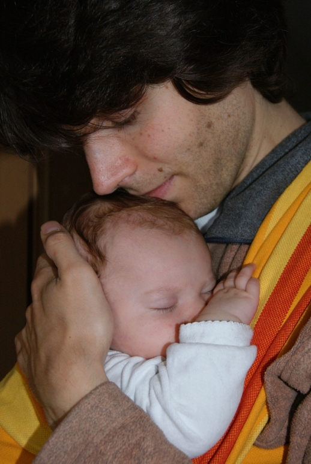

Mit einem zufriedenem Baby mobil und flexibel sein; Zeit für sich haben und gleichzeitig die Bedürfnissen und Wünsche des Baby erfüllen; einige Handgriffe im Haushalt erledigen ohne weinendes Baby- Unmöglich?
Doch möglich- mit einem Tragetuch oder einer geeigneten Tragehilfe.
Tragen ist nicht nur ein neuer Trend oder schick oder was für „Ökos.“ Es ist ein Urbedürfnis von Babys und Kindern und einfach praktisch für Mütter, Väter, Großeltern und alle die Spaß daran haben und sich und dem Baby etwas Gutes tun wollen.Vorausgesetzt es wird eine gute Tragehilfe oder Bindung eines Tuches gewählt ist es nicht schädlich sondern unterstützt sogar die Entwicklung von Hüfte und Rücken und fördert sehr stark die Bindung zum Kind.
Damit Sie für sich und Ihr Baby eine entwicklungsfördernde, bequeme und zu Ihnen passende Trageweise finden, berate ich Sie gerne.

Tragetücher die Sie bei mir erwerben können finden sie unter anderem bei folgenden Anbietern: